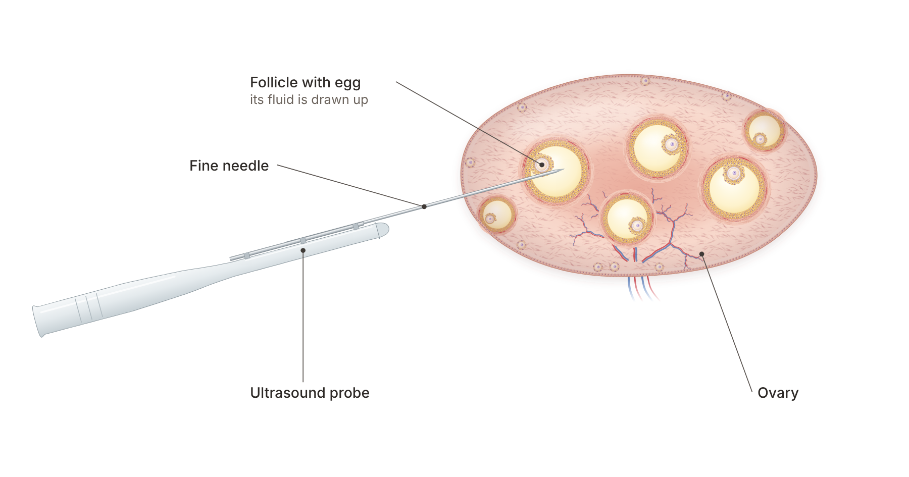

Quick answer: Egg retrieval is a short procedure, usually 10 to 30 minutes, in which a thin needle guided by ultrasound collects eggs from your ovaries. Most US clinics use IV sedation, so you breathe on your own but feel and remember little. Some clinics offer local anesthesia (a numbing injection near the cervix) instead. Studies show similar birth rates with both, but sedation hurts less and patients rate it higher.
In this article
The Short Verdict: Egg Retrieval With Sedation vs. Local Anesthesia
Head-to-Head: What the Research Shows About Egg Retrieval Pain
Egg Retrieval Recovery, Safety, Cost and Timeline Side by Side
Both approaches get the eggs out safely, and neither changes your chance of a baby in the studies we have. The real difference is how the egg retrieval feels in the moment and in the hours after. Here is the side-by-side view before the detail.
Feature | IV sedation (deep) | Local anesthesia (paracervical block) |
Are you awake? | Asleep or drowsy, breathing on your own | Awake and aware |
Who gives it | Usually an anesthesiologist | The fertility doctor |
Abdominal pain 4 hours later (0 to 10) | 3.00 (general anesthesia group) | 3.80 |
Live birth rate, 2017 cohort | 19.8% | 20.9% |
Very or somewhat satisfied | 98.4% | 80.8% |
Recovery room time | Longer, until the sedation wears off | Shorter |
Best fit | Most people, and anyone with many follicles | People with one or a few follicles who prefer to stay awake |
The short version: if you have a normal ovarian reserve and expect a good number of eggs, IV sedation is the comfortable default. Local numbing alone makes most sense when only one or a few follicles are being collected, as in natural-cycle or very mild IVF.
With IV sedation, medicine goes into a small drip in your arm and you drift off within a minute or two. You keep breathing on your own, so there is no breathing tube. A doctor speaking for the ASRM's patient site describes it this way: you are breathing on your own, but you do not feel or remember anything, and the aspiration itself takes about 10 minutes.
So, what happens while you are asleep? The process follows the same order at almost every clinic:
Check-in: you arrive with an empty stomach, about 34 to 36 hours after your trigger shot, and meet the anesthesia team.
Sedation: the IV medicine starts, and your vital signs are monitored the whole time.
Aspiration: a vaginal ultrasound probe carries a fine needle through the vaginal wall into each ovary. The fluid in each follicle is drawn into a tube.
Lab handoff: the embryologist finds the eggs in the fluid under a microscope, often while you are still in the room.
Recovery room: you wake up, rest for a short time, and go home with someone who can drive you.
There is no cut on your skin and no stitches. The needle passes through the vaginal wall, which heals quickly.
Not usually. Most clinics use deep IV sedation, often with a medicine called propofol, rather than full general anesthesia with a breathing tube. Patients describe it in very different ways. One forum member called it "the best sleep ever," while another said, "you are technically awake during the procedure, but you have no memory of it." Both are normal experiences of the same sedation, set at slightly different depths.
With local anesthesia, the doctor injects numbing medicine into the tissue around your cervix. This is called a paracervical block. You stay fully awake, which some people prefer. As one patient put it, "I don't like the thought of being out of control and put under." Others compare the numbing to a dentist's injection before a filling.
The needle path into the ovaries is the same as under sedation. What differs is that the numbing covers the vaginal wall well but does less for the ovary itself, which is why some people feel a deep pulling or cramp as each follicle is drained. Many clinics pair the block with a mild pain reliever or light "conscious" sedation, where you stay awake but relaxed.
It is more common in Europe and at clinics that focus on natural-cycle IVF, where only one or two follicles are collected. Most US clinics, including those running standard stimulation protocols, use IV sedation as the default. If being awake matters to you, ask early in planning which options your clinic supports.
The research is reassuring on the big question: the type of pain relief does not change your chance of pregnancy. It does change comfort. Here is what the main studies found.
A Cochrane review of 21 randomized trials with 2,974 women found no single method clearly best. Combining methods, such as sedation plus a numbing block, gave better pain relief than one method alone. Across 12 studies, pregnancy rates did not differ, and satisfaction was high with every approach.
A 2017 study of 481 women in the Journal of Assisted Reproduction and Genetics let patients choose between a paracervical block and general anesthesia. Live birth rates were nearly the same, 20.9% with the block and 19.8% with anesthesia. Four hours later, the block group reported more abdominal pain (3.80 versus 3.00 out of 10), and 98.4% of the anesthesia group were very or somewhat satisfied, compared with 80.8% of the block group. The authors concluded the choice should be the patient's.
How deep the sedation goes matters too. In a 2025 randomized trial in Human Reproduction, 160 women had a paracervical block with light conscious sedation. Their worst pain during retrieval averaged about 56 to 60 on a 100-point scale, which is moderate pain. A 2025 study of 100 first-time patients found that 40% reported pain with nurse-given propofol sedation, compared with 6% when an anesthesiologist managed the anesthesia, with similar egg numbers (10.8 versus 11.4).
Study | Women | What was compared | Key finding |
Cochrane review, 2013 | 2,974 in 21 trials | All pain-relief methods | No difference in pregnancy; combined methods hurt least |
JARG cohort, 2017 | 481 | Local block vs. general anesthesia | Live birth 20.9% vs. 19.8%; satisfaction 80.8% vs. 98.4% |
Human Reproduction RCT, 2025 | 160 | Light sedation plus block (with or without VR) | Worst pain about 56 to 60 out of 100 |
ESHRE abstract, 2025 | 100 | Anesthesiologist vs. nurse-given sedation | Pain reported by 6% vs. 40% |

Under deep IV sedation, most people feel little or nothing during the procedure. Under local numbing or light sedation, expect moderate cramping for a few minutes. "It was horrendous, felt everything," wrote one patient whose sedation was lighter than expected, which is why it is worth asking exactly what kind of sedation you will get.
The right choice depends on how many follicles you have, how you feel about being asleep, and what your clinic offers. Here is a simple way to sort it.
IV sedation tends to suit you if:
you have a normal or high ovarian reserve and expect 6 or more follicles;
you feel anxious about the procedure or have a low pain threshold;
you have endometriosis or ovaries that sit high or are hard to reach;
you want to be unaware of the procedure itself.
Local anesthesia (with or without light sedation) may suit you if:
you are having natural-cycle or very mild IVF with one or a few follicles;
you have a medical reason to avoid sedation, which your anesthesiologist can advise on;
you strongly prefer to stay awake and can go home sooner;
you want to avoid the extra cost of sedation.
If you are over 40 or have a low AMH and are planning a gentler, low-follicle protocol, our sister clinic Rejuvenating Fertility Center specializes in those cases.
Yes, and this is the part most guides leave out. The more follicles the doctor drains, the longer the procedure, the more needle passes through the ovary, and the more sore you are likely to feel afterward. That matters for Aurea's typical patient, who is under 40 with a good ovarian reserve.
A 2024 multi-center study of 1,039 patients looked at 2,290 natural or minimal-stimulation cycles done with no anesthesia at all. Median pain was 3.0 out of 10, which is mild. Pain rose by 1.14 points when 6 or more eggs were collected compared with one, and the authors concluded that with one or a few follicles, retrieval can be offered without anesthesia.
The same pattern shows up after the procedure. A 2006 prospective study of 1,058 retrievals in Human Reproduction found that pain increased with the number of eggs retrieved. A 2022 study of 789 retrievals found that complications, mostly severe pain, occurred in 2.87% of low responders, 6.39% of normal responders and 10.51% of high responders.
What this means for you: if you are likely to make many eggs, deep sedation during the procedure and a calm plan for the first 2 days afterward make the most difference. It is also one reason Aurea uses precise low, medium or high dosing instead of the maximum dose, so you grow the eggs you need without overstimulating your ovaries.
For most people, egg retrieval recovery takes 1 to 2 days, and serious problems are rare. Here is what to plan for.
You will usually rest in the recovery room before going home. The ASRM expert notes that soreness and bloating are often worse the day after, and that discomfort from enlarged ovaries can last a week or two after a large egg collection. Acetaminophen is usually enough. Plan the day of retrieval off work, avoid sex and hard exercise until your doctor clears you, and call the clinic if pain gets worse instead of better.
In the 2006 study of 1,058 retrievals, there were no complications from sedation, vaginal bleeding occurred in 2.8% and usually stopped on its own, and there were no pelvic infections. About 3% had severe pain afterward. ASRM's IVF risks fact sheet says infections are uncommon and serious ovarian hyperstimulation syndrome (OHSS) complications occur in less than 1% of IVF cases. Call right away for shortness of breath, fainting, fever or pain that keeps rising.
Item | IV sedation | Local anesthesia |
Sedation fee at Aurea (as of 2026) | $750 | Not needed |
Time in the procedure room | About 10 to 30 minutes | About 10 to 30 minutes |
Need someone to drive you home | Yes | Recommended |
Back to desk work | Usually the next day | Often the same or next day |
At Aurea, an egg freezing cycle is $5,400 and IVF freeze-all is $6,950, with IV sedation listed separately at $750 on the pricing page. Prices can change, and your consult confirms your exact plan. Medications are not included; our IVF medication cost guide explains that part.
Here is the usual path from first visit to retrieval at Aurea, which is typically about 2 weeks:
First visit: ultrasound and blood tests, then your protocol is set.
Stimulation, about 8 to 12 days: daily injections with monitoring scans, in Manhattan, Long Island, Connecticut or through outside monitoring.
Trigger shot: retrieval is booked about 34 to 36 hours later.
Retrieval day: sedation, about 10 to 30 minutes in the room, then home to rest.
Next 1 to 2 days: rest, mild cramping and bloating, and a call from the lab about your eggs or embryos.
Questions to ask before your retrieval:
What kind of sedation will I have, and who will give it?
How many follicles do you expect, and does that change your advice?
How long will I be in recovery, and when can I go back to work?
What symptoms should make me call after hours?
If you are doing IVF, the lab work starts the moment the eggs are found. Read how EmbryoScope time-lapse monitoring watches embryos without disturbing them, and whether PGT-A testing makes sense for you. For the full plan, see IVF under 40 or how two-week IVF works.
With deep IV sedation, most people feel little or nothing during the procedure and wake up with mild cramping. With local numbing alone, expect moderate cramping for a few minutes. In a large 2024 study of mild cycles with no anesthesia, median pain was 3.0 out of 10.
At most US clinics, yes, or close to it. IV sedation lets you breathe on your own while you sleep lightly, and most people remember nothing. Ask your clinic whether an anesthesiologist gives it, since one study found far fewer patients reported pain when an anesthesiologist managed it.
Most people rest for the day and return to desk work the next day. Soreness and bloating are often worst on day two. If many eggs were collected, mild discomfort from enlarged ovaries can last a week or two.
No clear difference has been found. A Cochrane review of 21 trials found similar pregnancy rates across pain-relief methods, and a 2017 study found live birth rates of 20.9% with a local block and 19.8% with general anesthesia.
Sometimes. When only one or a few follicles are collected, as in natural-cycle IVF, studies show pain is usually mild and some clinics offer it awake. With more follicles, pain rises, so most doctors recommend sedation.
IV sedation is listed at $750 on Aurea's pricing page as of 2026, separate from the egg freezing ($5,400) or IVF cycle fee. Prices can change, and your consult confirms what your plan includes.
Egg retrieval is short, safe and well studied, and the type of pain relief does not change your odds of a baby. For most people under 40 with a good egg count, deep IV sedation is the most comfortable choice, while local numbing fits best when only a few follicles are collected. Knowing what to expect is the best cure for nerves.
If you are thinking, "I am very nervous about the egg retrieval," you are in good company, and a clear plan helps. At Aurea Fertility Center, our team walks you through every step, from sedation to recovery, and you can text a real person 24/7. Book a free 20-minute nurse call or a $350 physician consult to plan your cycle.